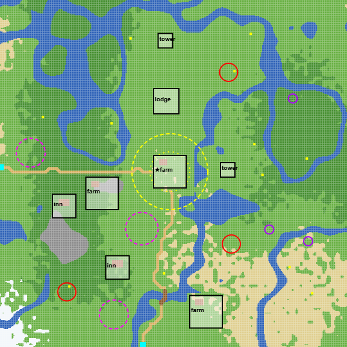
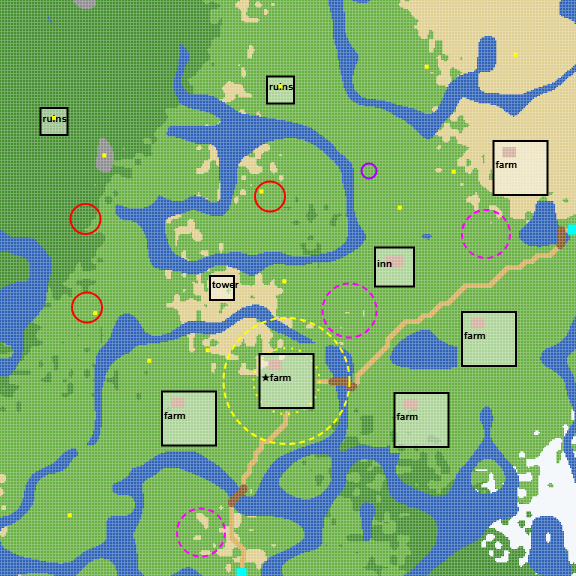
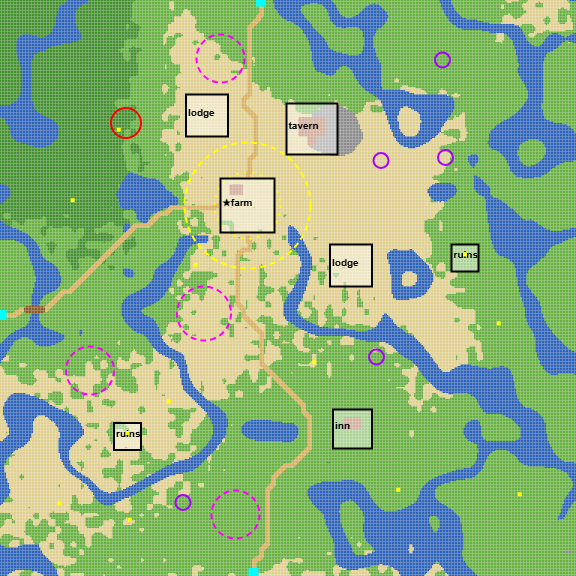
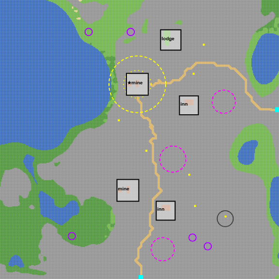
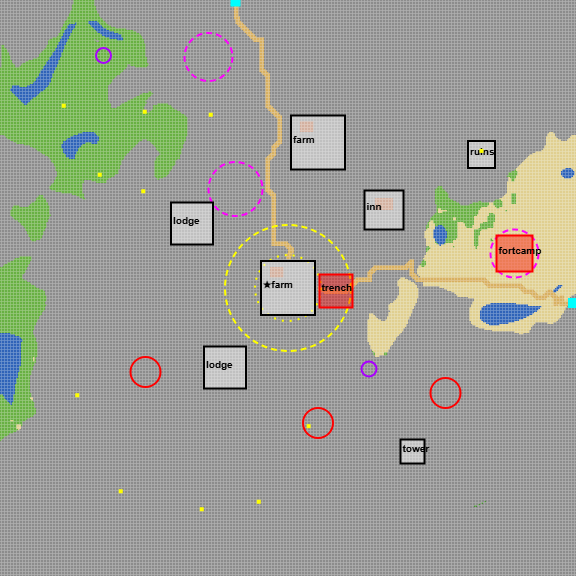
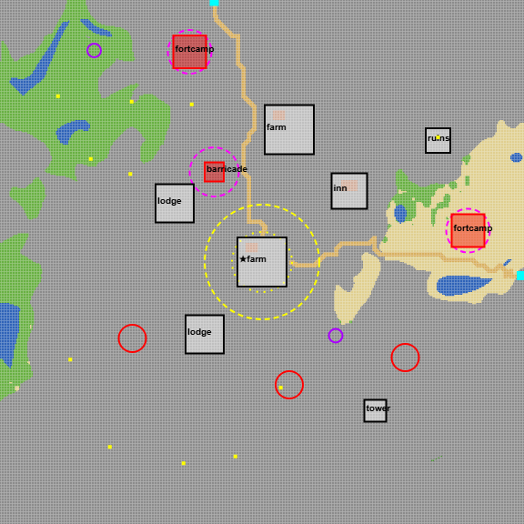
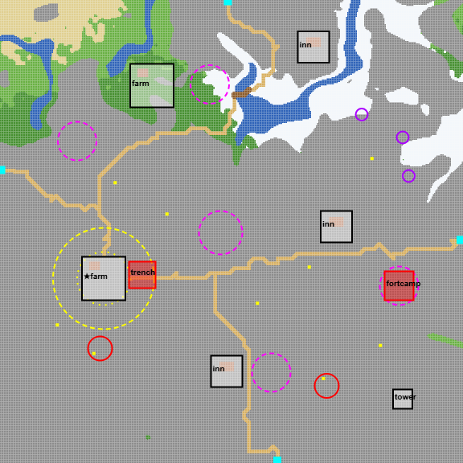
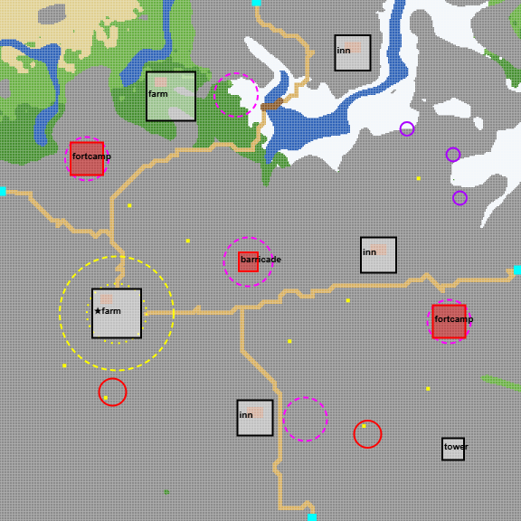

Principal central
farm (central) • 7 POIs, 1 acamp., 0 grutas, 3 bandos, 7 baús
?cenario=tile&auto=1&mute=1&seed=11&forma=pangeia&ti=4&tj=1&tema=fazenda

Principal deslocado
farm (deslocado) • 9 POIs, 1 acamp., 0 grutas, 3 bandos, 7 baús
?cenario=tile&auto=1&mute=1&seed=11&forma=pangeia&ti=3&tj=1&tema=fazenda

Principal na beira da estrada
farm (estrada) • 7 POIs, 0 acamp., 0 grutas, 4 bandos, 6 baús • pendente: plantacao, plantacao, plantacao
?cenario=tile&auto=1&mute=1&seed=11&forma=pangeia&ti=2&tj=2&tema=fazenda

Mina na encosta (ponto alto)
mine (encosta) • 5 POIs, 3 acamp., 1 grutas, 4 bandos, 6 baús • pendente: vila_trabalhadores
?cenario=tile&auto=1&mute=1&seed=11&forma=pangeia&ti=3&tj=1&tema=mina

Conquista em tile de 1 abertura(s)
farm (fundo) • 7 POIs, 3 acamp., 0 grutas, 2 bandos, 9 baús • pendente: plantacao
?cenario=tile&auto=1&mute=1&seed=42&forma=pangeia&ti=1&tj=4&tema=fazenda&batalha=conquista&entrada=E

Defesa em tile de 1 abertura(s)
farm (fundo) • 7 POIs, 3 acamp., 0 grutas, 2 bandos, 9 baús • pendente: plantacao
?cenario=tile&auto=1&mute=1&seed=42&forma=pangeia&ti=1&tj=4&tema=fazenda&batalha=defesa&entrada=E

Conquista em tile de 2 abertura(s)
farm (central) • 7 POIs, 3 acamp., 0 grutas, 2 bandos, 9 baús • pendente: vila_trabalhadores, vila_trabalhadores
?cenario=tile&auto=1&mute=1&seed=42&forma=pangeia&ti=2&tj=3&tema=fazenda&batalha=conquista&entrada=E

Defesa em tile de 2 abertura(s)
farm (central) • 7 POIs, 3 acamp., 0 grutas, 2 bandos, 9 baús • pendente: vila_trabalhadores, vila_trabalhadores
?cenario=tile&auto=1&mute=1&seed=42&forma=pangeia&ti=2&tj=3&tema=fazenda&batalha=defesa&entrada=E

Choque em tile de 2 abertura(s)
farm (central) • 7 POIs, 3 acamp., 0 grutas, 2 bandos, 9 baús • pendente: vila_trabalhadores, vila_trabalhadores
?cenario=tile&auto=1&mute=1&seed=42&forma=pangeia&ti=2&tj=3&tema=fazenda&batalha=choque&entrada=E&entrada2=N

Conquista em tile de 4 abertura(s)
farm (estrada) • 6 POIs, 2 acamp., 0 grutas, 3 bandos, 7 baús • pendente: plantacao
?cenario=tile&auto=1&mute=1&seed=42&forma=pangeia&ti=4&tj=3&tema=fazenda&batalha=conquista&entrada=E

Defesa em tile de 4 abertura(s)
farm (estrada) • 6 POIs, 2 acamp., 0 grutas, 3 bandos, 7 baús • pendente: plantacao
?cenario=tile&auto=1&mute=1&seed=42&forma=pangeia&ti=4&tj=3&tema=fazenda&batalha=defesa&entrada=E

Choque em tile de 4 abertura(s)
farm (estrada) • 6 POIs, 2 acamp., 0 grutas, 3 bandos, 7 baús • pendente: plantacao
?cenario=tile&auto=1&mute=1&seed=42&forma=pangeia&ti=4&tj=3&tema=fazenda&batalha=choque&entrada=E&entrada2=W